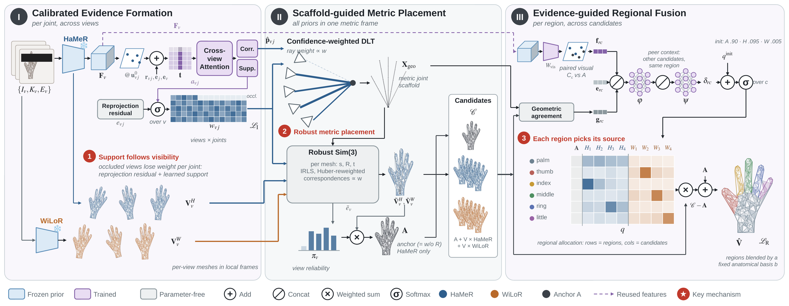

Form2Frame
Calibrated multi-view hand meshes from frozen monocular priors

Form2Frame turns synchronized, calibrated views into one metric hand mesh while HaMeR and WiLoR stay frozen. Per-joint view weights suppress occluded views before triangulation. Every monocular mesh is then placed into a shared metric frame by robust Sim(3), and each anatomical region picks its best source mesh.
4.39 mm mesh MPJPE on DexYCB-MV with no alignment of any kind. Vertex error is 26% lower than HaMeR with uniform triangulation on DexYCB-MV, and 30% lower on HanCo.